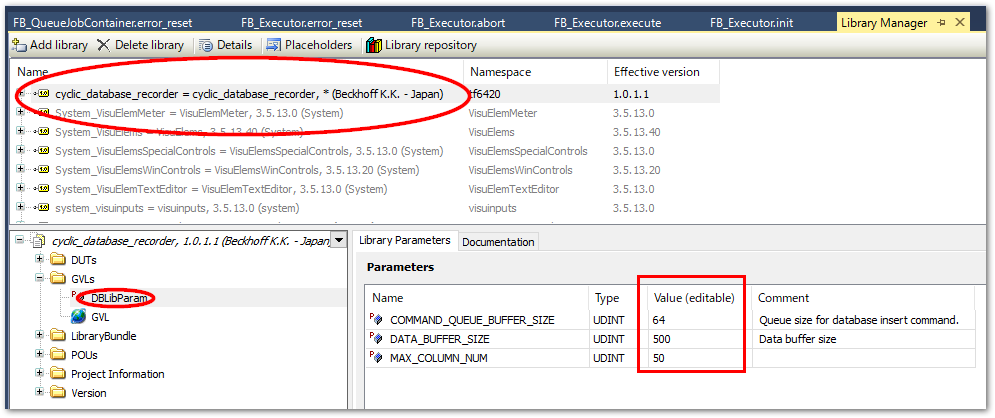

PLCプログラム#
以下ライブラリを用いた実装方法について説明します。
このライブラリにより記録できるデータは以下の通りです。
時系列に変動するTwinCATのサイクル精度（最短50μs）のデータ取得
不定期に発生するイベントの状態変化記録
ただし、データベースの抽出（読み出し）の機能はサポートしていません。
本節の実装例においてPLC側でデータを収集し、データベースへ記録する方法について説明します。この際のタスク設定やデータを遅滞なく記録するためのデータバッファの調整方法について説明します。
ライブラリの仕様#
本ライブラリでは、データベース書込み用ファンクションブロックRecordInfluxDBと、様々な制御タスク上に配置する計測用ファンクションブロックBufferedRecord、DirectRecordから構成されています。
計測用ファンクションブロックのインスタンスは複数作成することができます（マルチチャンネル）。これらのチャンネルから個々にコマンドキューを通じて書込み指令がキューインされ、RecordInfluxDBのインスタンスに対して順次データ書込みを行います。
RecordInfluxDBはグローバル変数として定義し、各計測用ファンクションブロックの引数にその参照を与える方法で実装します。
図 6.26 本ライブラリの機能概要#
計測用ファンクションブロックには、記録用バッファを持つBufferedRecordと、バッファを持たないDeirectRecordの2種類があります。データベースの書込みタスクの処理時間内に複数のデータを書き込む可能性がある場合は必ずBufferedRecordをお使いください。バッファの配列を使って順次データを記録しますので、計測データ入力とデータベースへの書込み出力の速度差を吸収します。したがって、バッファサイズは計測サンプリング間隔やそのサイズと、データベースへの書込み速度とのバランスで最適値を設定する必要があります。その方法を計測用プログラム実装に示します。
また、BufferedRecordファンクションブロックは、図 6.27のとおり、事前に設定するチャンクサイズの指定に応じて、RecordInfluxDBへコマンドが指示される単位のデータサイズが最適化される機能があります。
図 6.27 データバッファとチャンクサイズの決定方法#
チャンクサイズの自動調整機能
チャンクサイズは、minimum_chunk_sizeとmaximum_chunk_sizeプロパティで設定したサイズの間で、バッファ使用率に応じた比例制御で決定されます。
次図に示すグラフは、黄色が次回データベースへ書き込む予定の目標配列アドレスで、緑色が計測値が記録される実アドレスです。緑色が黄色に交わった時点でデータベースへの書き込みコマンドが発行されます。黄色の目標アドレスは、キューの使用サイズによりダイナミックに変化していることがわかります。
通常はminimum_chunk_sizeを下限としたサイズのチャンクで小刻みにデータベースに書込みを行い最新データを速やかにデータベースへ反映することができます。データベースに対して一時的に負荷がかかった場合（たとえば別クライアントからデータベースに対して大量のデータ問い合わせが発生したり他のプロセスにより一時的にリソース不足に陥った場合）は、書込み速度が一時的に低下します。この際、自動的にチャンクサイズを大きくすることで、書込みの回数を減らしてインサートに掛かるオーバヘッドを最小化させることができます。これによってこの後、リソースが回復した際に速やかにバッファ容量を回復させることができます。

図 6.28 Grafanaによるバッファ使用状況可視化#
このライブラリを実装する手順を行います。
ライブラリのインストールとライブラリパラメータ（デフォルトバッファサイズ）設定
InfludxDBへ記録データ型を定義した構造体の作成
データベース書込みドライバ用のタスクとプログラム作成
各実行タスク上にデータ収集プログラム作成
データベース書込みスループット評価とバッファ最適化
ライブラリのインストールとパラメータ設定#
リポジトリから取得したソリューションを開きます。
PLCプロジェクトを右クリックし、
Save as library and install...を選択します。database_connection.libraryファイルを保存するウィンドウが現われます。適当な場所へ保存してください。注釈
同じXAE環境であればインストールを同時に行っていますので、保存じた
database_connection.libraryファイルは今回使用しません。他のXAEでライブラリを使いたい場合は、ライブラリマネージャからこのファイルをインストールしてください。ライブラリを適用したいTwinCATプロジェクトを開き、TF6420のライセンスを有効にしてください。
続いて、PLCプロジェクトの
Referencesメニューを右クリックしてAdd library...を選択します。Beckhoff-JP>Utility>cyclic_database_recorderを選択してOKボタンを押します。追加後は、
influxdb-clientがライブラリに一覧されます。パラメータとして次の二つのバッファサイズを設定します。パラメータ
初期値
説明
COMMAND_QUEUE_BUFFER_SIZE
64
データベースサーバへ書込みを行うコマンドのキューバッファです。特に理由が無い限り変更は必要ありません。
DATA_BUFFER_SIZE
2500
計測側のサンプリングタイムに応じたサイズのバッファを用意する必要があります。目安としてデフォルト値では1～10msのサイクルタイムであれば2,500、50μsであれば50,000程度となりますが、データ構造体のサイズや、他のチャンネル数次第で変動します。section_adjust_influxdb_data_queue_buffer_sizeの明示的な指定を行わない場合、この指定サイズが適用されます。したがって、section_buffered_record_program_exampleの実装例のようにデータバッファの実体を作成する際、その配列サイズに
DbLibParam.DATA_BUFFER_SIZEを指定する必要があります。
{kind=link}
{kind=link}
{kind=link}
データベース書込み専用のタスクとプログラム作成#
計測用のプログラムを記述する前に、データベース書込み用のタスクとプログラムを記述します。
データベース書込みタスク作成#
PLC上に作成したバッファからデータベースへ書込み処理が行われるプログラムのための専用タスクを作成します。
次の要件でタスクを作成し、PLC上にReference taskを新規作成してください。
Windowsとのシェアで50%程度
専用コアを割り当てる
サイクルタイムは10ms程度で良い
注意
TF6420とのADS通信により、データベースのレスポンスに依存してレイテンシが生じる可能性があります。このため、データベース書き込みタスクはコアを含めてモーション等のリアルタイム性能を要するタスクから独立させる必要があります。
次図は、50μsの制御タスクと、データベース書込みタスクを分離した際のレイテンシを計測したグラフです。高速周期データをADSを用いて書き込むタスクでは、都度Windows側の非リアルタイムプロセスとハンドシェークを行うため、大きなレイテンシが生じることが分かります（左下）。対してPLCのデータバッファを用いて計測データを書き込む処理を行っている50μsのタスクにはレイテンシが生じていないことが分かります。

このように通信に対する安定性をPLCで担保できることが本ライブラリを利用いただくメリットにもなります。
データベース書込み部プログラム作成#
まず、グローバル変数定義（Global variable list名をGVLとします）としてデータベース書き込みファンクションブロックRecordInfluxDBのインスタンスを定義します。グローバル変数とすることで、全てのプログラムから参照できるようにします。
また、TF6420のコンフィギュレータで定義したDBIDを定数定義し、RecordInfluxDBのコンストラクタ引数DBIDに指定します。
{attribute 'qualified_only'}
VAR_GLOBAL CONSTANT
TARGET_DBID : UINT := 1;
END_VAR
VAR_GLOBAL
// Cycle record data
fbInfluxDBRecorder :RecordInfluxDB(DBID := GVL.TARGET_DBID);
END_VAR
続いて、先ほど作成したReference taskに属するプログラムを新規で作成し、以下のとおりプログラムを定義します。宣言部は何も記載する必要はありません。
// DB Write
GVL.fbInfluxDBRecorder();
上記の作成したプログラムは専用のタスクで動作するようにします。
計測用データ構造体の定義#
登録したいデータモデルを構造体で定義します。構造体の各要素の宣言行の上部に、次の書式で
{attribute 'TagName' := 'タグ名称'}タグ（インデックス）となるデータ行の上部に宣言します。
{attribute 'FieldName' := 'フィールド名称'}フィールドとなるデータ行の上部に宣言します。
下記の通り、タグとフィールドの構造体を分けて定義し、フィールド定義構造体では、タグ定義構造体を継承して定義すると良いでしょう。これにより、 Measurement 毎に共通のタグセットを定義する事ができます。
警告：タグに利用できるデータ型は文字列型のみ
InfluxDBの仕様により、タグに使用できるデータ型はSTRINGまたは、WSTRINGのみです。他の型を含めた構造体データを書込むとエラーになります。
警告：タグのバリエーションにご注意ください
DataTag構造体で定義する要素は一般的なデータベースシステムにおけるインデックスに該当します。influxDBは時刻に加えてこのこのタグを組合せて高速に検索できる仕様となっています。
このタグの値のバリエーションが多くなる[1]と、influxDBは非常に多くのメモリを消費する事が分かっています。このため、動作が遅くなったり他のプロセスに影響を及ぼし、システムを不安定にさせる要因となります。よって、タグに設定するデータには次の要件を満たすものに対して割り当てていただくよう、十分にご注意ください。
見積可能な有限の種類のデータであること
短期間に毎回異なる値がセットされるようなデータにはタグを割り当てず、フィールドに割り当ててください。
リテンションポリシーのデータの保存期間において予測可能なデータの種類の数が、許容できるメモリ消費量に収まっていることが求められます。
データの種類が増える頻度とタイミングが一定で予測可能であること
イベントデータ等で、予測不可能なタイミングでデータ書き込みが行われ、都度その値が変化するようなものをタグとして登録すると、イベントが集中することで意図せずカーディナリティが上昇し、メモリを圧迫する恐れがあります。
以上、タグ構造体は以下の通り定義します。この例では、データベースへ書き込む際のバッファの使用状況を計測するデータDatabaseThroughput構造値を記録するプログラムをご紹介します。ライブラリ内のPOUにも含まれています。この結果は、最終的にはGrafanaによるバッファ使用状況可視化のようにGrafanaと呼ばれる可視化WEBアプリケーションで確認することができます。
TYPE DatabaseThroughput:
STRUCT
{attribute 'TagName' := 'machine_id'}
machine_id : STRING(255); // 設備名
{attribute 'TagName' := 'data_type_id'}
job_id : STRING(255); // 発生イベント種別
{attribute 'FieldName' := 'DB_queue_count'}
db_insert_queue_count: UDINT; // キューインされたデータの個数
{attribute 'FieldName' := 'DB_buffer_current_index'}
current_index: UDINT; // バッファ配列の現在のインデックス番号
{attribute 'FieldName' := 'DB_buffer_next_index'}
next_index: UDINT; // 次回InfluxDBへ書き込みを行う配列のインデックス番号
{attribute 'FieldName' := 'DB_buffer_usage'}
buffer_usage: REAL; //バッファ使用率
END_STRUCT
END_TYPE
計測用プログラム実装#
次にメインプログラムに計測用のプログラムを記述します。ここでは、記録データの構造体毎に、FIFOキューでデータベース側に一定のサイズに分割して書き込み指令を送るBufferRecordファンクションブロックインスタンスを定義し、これを使ってデータ記録を行います。
まず、プログラム変数の宣言部です。
PROGAM MAIN
VAR
// Record data buffer
DatabaseThroughputRecordData :DatabaseThroughput; // for insert dataset
DatabaseThroughputRecordBuffer :ARRAY [0..DBLibParam.DATA_BUFFER_SIZE] OF DatabaseThroughput;
fbThroughputRecorder_influxDB :BufferedRecord(
GVL.fbInfluxDBRecorder,
ADR(DatabaseThroughputRecordBuffer)
); // record controller
initialized : BOOL; // 初期化用フラグ
END_VAR
DatabaseThroughputRecordData毎サイクル記録するデータを保管する構造体変数です。計測した値は、この変数の要素にセットします。
DatabaseThroughputRecordBuffer連続したデータが保管されるデータバッファです。配列の個数はサイクルタイムやデータサイズなどの要件によりチューニングして決定します。配列の要素数は0始まりとします。
fbThroughputRecorder_influxDBBufferReocrdファンクションブロックインスタンスです。データバッファの中から順番に適切なサイズ（チャンク）を切り取ってデータベースへの書込みコマンドを発行します。次の引数をコンストラクタ変数で指定します。データベース書込み部プログラム作成節で定義したデータベース書き込みドライバのオブジェクト変数を指定。
データバッファのアドレスを指定。
記録データの構造体名
プログラム部には、まず初期化ロジックを定義します。このロジックはinitializedフラグによって、PLCスタート後1サイクルのみ実行されます。
(* Initialize*)
IF NOT initialized THEN
// Influx DB
fbThroughputRecorder_influxDB.set_buffer_info(
struct_size := SIZEOF(DatabaseThroughputRecordBuffer[0]),
buffer_size := SIZEOF(DatabaseThroughputRecordBuffer),
structure_name := 'DatabaseThroughput'); // Measurement name
fbThroughputRecorder_influxDB.SQL_parameters.table_name := 'DatabaseThroughput'; // Structure type name
initialized := TRUE;
END_IF
次に、実際のデータ書き込みを行うプログラムを定義します。これは毎サイクル実行します。計測データは下表の方法で取得できます。
インスタンス |
プロパティ |
説明 |
|---|---|---|
GVL.InfluxDBRecorder |
queue.queue_usage |
コマンドキューの使用率 |
fbThroughputRecorder_influxDB |
index |
現在のデータ記録インデックス |
fbThroughputRecorder_influxDB |
next_index |
次回データベースに書込みが行われる予定のインデックス |
fbThroughputRecorder_influxDB |
buffer_usage |
現在バッファに溜まっているデータの全体のサイズに対する比率 |
ここから計測できるデータを使って、下記の通り記録プログラムを定義します。
// Tag Data
DatabaseThroughputRecordData.machine_id := 'machine-1';
DatabaseThroughputRecordData.job_id := 'db_throughput';
// Field data
DatabaseThroughputRecordData.db_insert_queue_count := GVL.fbInfluxDBRecorder.queue.queue_usage;
DatabaseThroughputRecordData.current_index := fbThroughputRecorder_influxDB.index;
DatabaseThroughputRecordData.next_index := fbThroughputRecorder_influxDB.next_index;
DatabaseThroughputRecordData.buffer_usage := fbThroughputRecorder_influxDB.buffer_usage;
// キューイン
fbThroughputRecorder_influxDB.write(ADR(DatabaseThroughputRecordData));
上記のとおり、まずはDatabaseThroughputRecordDataというデータ構造体のインスタンス変数の各要素に記録値をセットし、BufferedReocrdのインスタンス変数のwrite()メソッドの引数にそのアドレスを渡す事でデータのバッファへのキューインが行われます。
BufferedRecordファンクションブロックでは、データベースへの書き込み速度に応じて自動的にチャンクサイズを決定し、バッファが一定サイズ要素数になるとInfluxDBへ記録コマンドが発行されます。
このように、サイクルデータの記録と、InfluxDBへの書き込みが非同期で行われる様子が、Grafanaにて閲覧することができます。
InfluxDBのクエリとGrafanaへの表示#
from(bucket: "machine_monitoring")
|> range(start: v.timeRangeStart, stop: v.timeRangeStop)
|> filter(fn: (r) => r["_measurement"] == "DatabaseThroughput")
|> filter(fn: (r) => r["_field"] == "DB_buffer_usage")
|> aggregateWindow(every: v.windowPeriod, fn: mean, createEmpty: false)
|> yield(name: "mean")
from(bucket: "machine_monitoring")
|> range(start: v.timeRangeStart, stop: v.timeRangeStop)
|> filter(fn: (r) => r["_measurement"] == "DatabaseThroughput")
|> filter(fn: (r) => r["_field"] == "DB_buffer_next_index" or r["_field"] == "DB_buffer_current_index")
|> aggregateWindow(every: v.windowPeriod, fn: mean, createEmpty: false)
|> yield(name: "mean")
これら二つのクエリをGrafanaを用いて可視化ダッシュボードを作成します。Grafanaのセットアップでダッシュボードを作成する手順は、Grafanaでダッシュボード作成まで読み進めてください。
Cycle time = 1ms, DbLibParam.DATA_BUFFER_SIZE := 250のとき。概ね100%を超えており、バッファサイズが少なすぎることが分かります。
Cycle time = 1ms, DbLibParam.DATA_BUFFER_SIZE := 2,500のとき。概ね10%以下を安定しており、十分なバッファサイズであることがわかります。
Cycle time = 50μs, DbLibParam.DATA_BUFFER_SIZE := 2,500のとき。概ね100%を超えており、バッファサイズが少なすぎることが分かります。
Cycle time = 50μs, DbLibParam.DATA_BUFFER_SIZE := 50,000のとき。10%を越えることがありますが、安定してデータが書き込めていることが分かります。必要に応じてバッファサイズを増やせば10%を下回る状態で安定します。
バッファサイズは安定した状態だけでなく、データベース側（Windows側やオンプレミスサーバ側）の負荷やネットワークの状況により変動する最悪スループットを考慮して十分なサイズを割り当ててください。